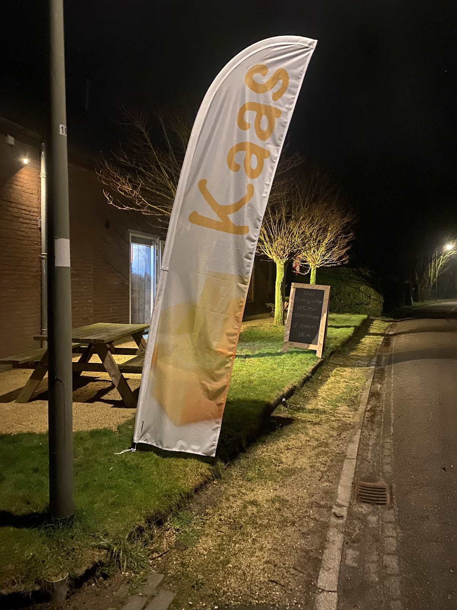
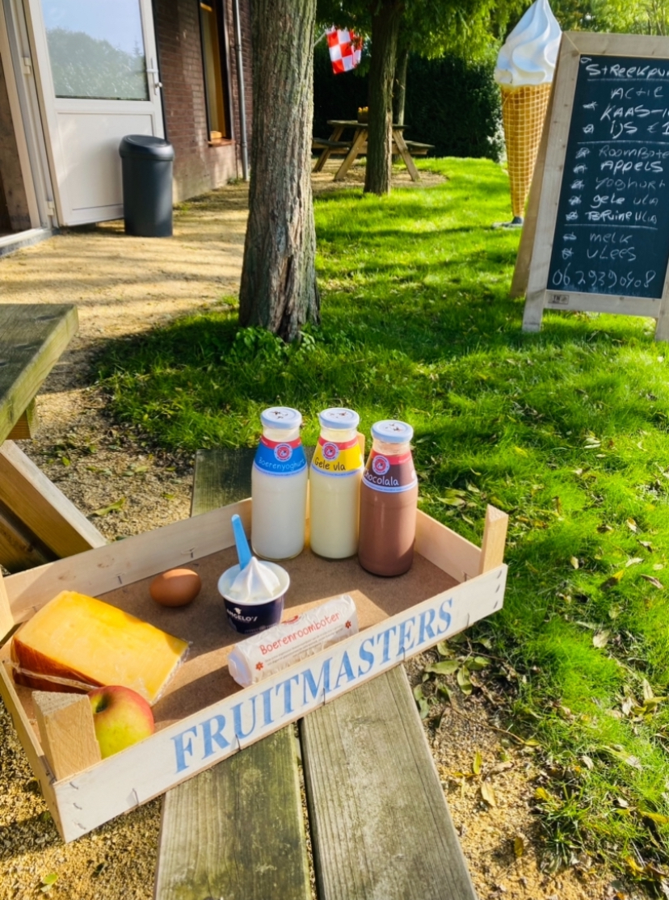

Aan de Maasbommelsestraat in het pittoreske Megen — een historisch stadje aan de Maas in Noord-Brabant — staat onze boerderij. Omgeven door knotwilgen, groene weiden en het typische Brabantse landschap bieden wij dagelijks verse streekproducten aan.
Bij onze boerderij staat het Streekpunt: een verkooppunt waar je 7 dagen per week terecht kunt voor verse producten uit de regio. Van ambachtelijk ijs en boerenkaas tot boerenyoghurt, roomboter, vla, melk, eieren, appels en vlees.
Alles netjes gepresenteerd in houten kisten en een overzichtelijk krijtbord met het actuele aanbod. Geen gedoe, geen rijen — gewoon even stoppen, uitkiezen en meenemen.
Megen ligt in de gemeente Oss, aan de Maas. Het is een geliefd punt voor fietsers en wandelaars die genieten van het rivierenlandschap. Onze boerderij is een perfecte tussenstop: pak een bankje, geniet van een ijsje en neem de rust van het platteland in je op.
Met de Brabantse rood-witte vlag als decoratie en een groot softijshoorn als herkenningspunt, kun je ons niet missen.
Het Streekpunt is dagelijks geopend van 09:00 tot 21:30. Je kunt producten kiezen uit de automaat of het uitgestalde aanbod. Betalen kan contant of per pin. Heb je vragen? Bel ons gerust op 06-29390908.
Een kijkje op het erf

Het Streekpunt — dagelijks vers
Sfeer op het erf — knotwilgen en kaasvaandel
Kom langs en proef het zelf. We zijn 7 dagen per week open.